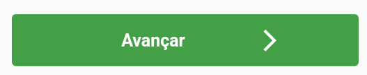

- Após baixar o aplicativo e abrir pela primeira vez, uma tela como está se abrirá:
- Após deve-se esolher a associação desejada. Esse processo pode ser feito de duas formas diferentes usando o código QRCode ou o Código da Associação, ambos são
enviados para o e-mail do consultor. Neste tutorial iremos usar o código:
- Após isso basta cliclar no botão "Avançar":

- Após basta aguardar que o aplicativo sicronize as informações, coisa de 5 segundos.
- Após a tela de Login será exibida.
- Basta inserir o nome de usuário e a senha do consultor. Tutorial para Cadastrar usuário do tipo Consultor: Link
- Após preencher com os dados necessários, basta clicar no botão "ENTRAR":
- Caso tenha ocorrido o login com sucesso você será levado para a tela inicial do aplicativo. Como essa:
Mas caso tenha acontecido algum erro ao entrar, por favor entre em contato a sua associação.
- Na tela inicial pode se visualizar de forma rápida a quantidade de veículos cotados e veículos ativados no mês.
- Para ter acesso as funçõe do aplicativo, basta clicar no botão superior de menu:
- Com isso serão exibidas todas as funções que podem ser executadas no APP.
- Agora iremos ver a opção "Cadastrar Cotação". Basta a selecionar:
- Após clicar na opção uma nova tela se abrirá:
Nesse momento estamos fazendo uma cotação, com isso não são necessários muitos dados do associado.
- Após preencher com os dados solicitados, basta clicar no botão "AVANÇAR":
- Com isso uma nova janela se abrirá e nela será solicitada a placa do véiculo:
Caso o véiculo possua placa, após inserir o número uma nova janela irá ser aberta, onde será necessário escolher o modelo do veículo:
Depois uma nova janela se abrirá, contendo as informações do veículo. Na maioria das placas é puxado automaticamente dados como: chassi, ano... Mas pode ocorrer de em alguns casos não esses
dados não serem automaticamente preenchidos, nesse casos é necessário que se insira os dados faltantes de forma manual. Inclusive é recomendado que seja feita verificação se os dados encontrados automaticamente,
são os mesmos do veículo a ser cotado.
Contudo ainda é necessário que se insira a Associção e a Categoria do veículo de forma manual.
Mas caso o veículo não possua placa, basta clicar no botão "Inserir dados do veículo manualmente":
Com isso uma nova janela se abrirá onde será possível introduzir os dados do veículo de forma manual.
Basta preencher com os dados solicitados.
- Após ter preenchido todos os dados e ter os conferido, basta clicar no botão "SALVAR":
- Nesta nova tela que se abriu, é onde se escolhe a cota e beneficios do veículo:
- Descendo até o final da página é possível ver o valor total da cotação.
- Após conferir o valor e as informações, basta clicar no botão "SALVAR", para finalizar a cotação.
- Após ter feito a cotação, será mostrada uma janela onde é possível ver de forma resumida algumas informações e ainda imprimir a cotação e compartilhar.
- Iremos em visualizar as cotações feitas, basta clicar na opção "Veículos Cotados":
- Ao tocar na opção automaticamente uma nova janela será listada contendo todas as cotações pelo usuário: